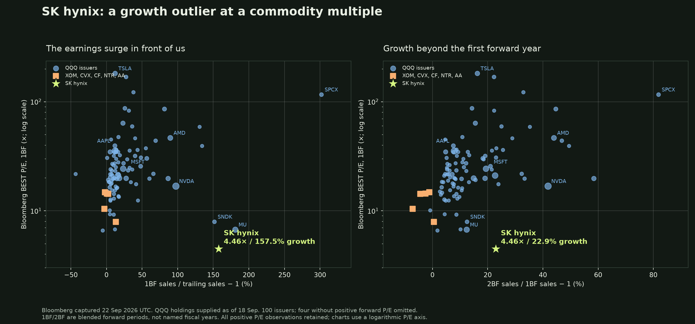
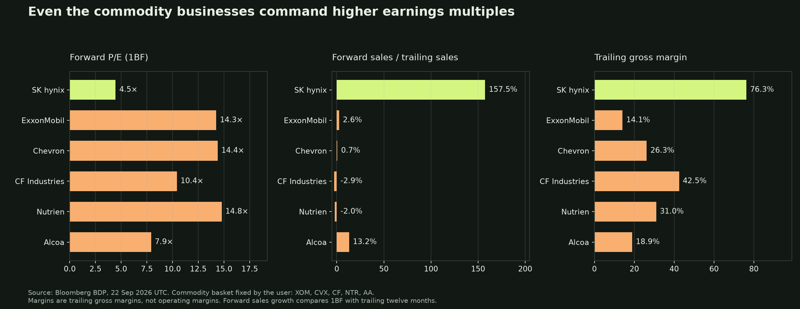

SK hynix: contracted AI demand deserves more than 4.46× earnings
22 September 2026 • Long SK hynix • Twelve-month horizon to 22 September 2027
The trade
We expect SK hynix to rerate as multi-year customer commitments turn a memory shortage into more durable earning power. The entry is 4.46× Bloomberg forward earnings. The base case is 8× on earnings 10% below today's estimate, producing 61% ordinary-share upside. The stock does not need a software multiple or another earnings upgrade for the investment to work.
The comparison is striking. ExxonMobil, Chevron, CF Industries, Nutrien and Alcoa average 12.35× forward earnings, 2.3% forward revenue growth and 26.6% trailing gross margins. Hynix is at 4.46×, 157.5% growth and 76.3% margins. It is cheaper than every company in that commodity basket. Against the median QQQ technology company at 26.41×, the gap is larger still. Bloomberg comparison
The key objection is equally clear: Samsung trades near 4.4× too; Micron trades at 6.7×. This is partly a Korean-memory valuation discount, not simply an overlooked hynix opportunity. Our target requires evidence that earnings will persist and that investors will capitalize them more generously. Prior memory cycles ended with earnings falling 79% or turning negative. The contract evidence must change that outcome.
| Decision point | Investment case |
|---|---|
| Entry | KRW1,933,000 ordinary share; xyz:SKHX perpetual mark $1,409.30 |
| Base, 45% house probability | 90% of current forward EPS × 8× → KRW3.119m; +61.4% |
| Bull / bear / tail | +146.5% / −44.5% / −89.9% equity returns; 20% / 25% / 10% probabilities |
| Expected return | +36.8% equity price return; +22.7% perpetual return if recent 30-day annualized funding cost persists |
| What breaks it | Contract failures, collapsing earnings, competitive margin erosion, or punitive perpetual funding |
The comparison: growth, margins and the price of earnings
These Bloomberg captures use 1BF blended forward P/E throughout. The first sales-growth measure compares next-twelve-month consensus sales with reported trailing sales; the second compares the following blended forward year with the first. Triple-digit growth refers to the first measure. Hynix's following-year growth is a still-strong 22.9%, not triple digits. Margins are gross margins, not operating margins.
| Comparison group | Mean / median 1BF P/E | Mean sales growth: 1BF / trailing | Mean sales growth: 2BF / 1BF | Mean trailing gross margin |
|---|---|---|---|---|
| SK hynix | 4.46× | 157.5% | 22.9% | 76.3% |
| QQQ all issuers | 31.6× / 22.5× (96/100) | 37.4% (100/100) | 16.5% (100/100) | 57.5% (96/100) |
| QQQ Information Technology | 37.8× / 26.4× (40/42) | 64.3% (42/42) | 24.6% (42/42) | 65.6% (42/42) |
| Five commodity producers | 12.4× / 14.3× (5/5) | 2.3% (5/5) | -2.9% (5/5) | 26.6% (5/5) |
Means are equal-weight company averages, with available observations / companies shown in parentheses. They are not the QQQ fund's aggregate P/E. The supplied holdings contain 101 share classes and 100 issuers; Alphabet's classes are combined for issuer averages. The complete list, allocations, all 42 Bloomberg-classified technology holdings and missing observations are in the appendix.
Four companies without positive forward P/E remain in growth calculations; no high multiple is removed or capped.

The P/E axis is logarithmic; all positive-P/E observations are included. Hynix is a low-multiple outlier on both growth horizons, although it is not the fastest-growing company in the sample.
The largest QQQ holdings
The top 15 issuers by the supplied 18 September allocations, combining Alphabet's classes, plus hynix:
| Company | BEST P/E (1BF) | Sales: 1BF / trailing | Sales: 2BF / 1BF | Gross margin, trailing | Gross margin, 1BF |
|---|---|---|---|---|---|
| SK hynix (000660) | 4.5× | 157.5% | 22.9% | 76.3% | 84.3% |
| NVIDIA Corp (NVDA) | 16.8× | 97.6% | 41.9% | 74.7% | 73.1% |
| Apple Inc (AAPL) | 35.3× | 12.2% | 7.9% | 48.7% | 47.5% |
| Alphabet Inc Class A (GOOGL) | 21.0× | 16.2% | 22.7% | 60.9% | 67.5% |
| Microsoft Corp (MSFT) | 24.3× | 23.4% | 19.4% | 67.9% | 65.9% |
| Micron Technology Inc (MU) | 6.7× | 181.0% | 12.4% | 72.6% | 85.9% |
| Amazon.com Inc (AMZN) | 19.9× | 18.1% | 14.9% | 50.8% | 52.6% |
| Advanced Micro Devices Inc (AMD) | 46.5× | 89.7% | 44.0% | 53.2% | 55.6% |
| Meta Platforms Inc (META) | 19.8× | 27.7% | 19.0% | 81.7% | 79.6% |
| Tesla Inc (TSLA) | 181.6× | 12.2% | 16.3% | 18.9% | 19.1% |
| Broadcom Inc (AVGO) | 19.8× | 86.6% | 58.5% | 68.8% | 72.1% |
| Intel Corp (INTC) | 63.5× | 23.2% | 15.5% | 38.6% | 43.4% |
| Walmart Inc (WMT) | 34.6× | 5.2% | 4.8% | 25.2% | 24.6% |
| Cisco Systems Inc (CSCO) | 21.6× | 16.5% | 7.2% | 64.5% | 64.8% |
| Palantir Technologies Inc (PLTR) | 85.7× | 81.5% | 44.7% | 84.8% | 86.3% |
| Costco Wholesale Corp (COST) | 39.4× | 11.8% | 7.6% | 12.9% | 11.4% |
Micron is the closest operating comparator. It has higher first-year growth and a similar forward gross margin. Hynix trades roughly 33% cheaper, with faster following-year sales growth: 22.9% versus 12.4%. Nvidia and AMD have different competitive advantages and capital requirements; their valuations describe the opportunity cost of capital, not direct targets for a memory manufacturer.
Even ordinary commodity producers cost more
| Company | BEST P/E (1BF) | Sales: 1BF / trailing | Sales: 2BF / 1BF | Gross margin, trailing | Gross margin, 1BF |
|---|---|---|---|---|---|
| SK hynix (000660) | 4.5× | 157.5% | 22.9% | 76.3% | 84.3% |
| ExxonMobil (XOM) | 14.3× | 2.6% | -4.4% | 14.1% | n/a |
| Chevron (CVX) | 14.4× | 0.7% | -2.5% | 26.3% | n/a |
| CF Industries (CF) | 10.4× | -2.9% | -7.1% | 42.5% | 40.9% |
| Nutrien (NTR) | 14.8× | -2.0% | -1.1% | 31.0% | 31.2% |
| Alcoa (AA) | 7.9× | 13.2% | 0.5% | 18.9% | 18.8% |

The basket was selected before the data pull to represent oil, fertilizer and aluminum. Its mean P/E is 12.35×, about 2.8 times hynix's, while following-year sales growth averages −2.9%. Alcoa, the cheapest, is 7.9× with 18.9% trailing gross margins. ExxonMobil and Chevron have no returned forward gross-margin estimate, so those cells are unavailable.
These are different industries with different capital needs. The comparison establishes a narrower point: cyclicality alone does not explain a 64% discount to other cyclical producers. The discount becomes justified if memory's earning power collapses much more severely. That is the claim we must test.
What changed: customers are making commitments beyond this cycle
SK hynix's Q2 release confirms KRW79.32tn revenue, up 257% year on year, KRW60.54tn operating profit, completed LTAs with around ten customers, and HBM4 mass shipments beginning in Q2. The management transcript describes terms normally around five years, volume commitments reinforced by deposits, and customer-specific pricing arrangements intended to address volatility. Issuer release · Captured call evidence
Customer commitments and deposits can support utilization through softer demand. Lower uncertainty around future cash generation can justify a higher multiple even when earnings estimates fall.
The distinction is committed demand versus guaranteed profit. Management has not disclosed revenue coverage, deposit amounts, cancellation penalties or minimum prices. Some contracted volume has greater visibility; all future earnings are not locked. A price cap can limit upside while preserving a floor. We do not rely on unconfirmed reports that all contracts are uncapped.
There is also a possible route for cash generation to reach shareholders. On the captured call, management said it intended to communicate additional shareholder-return plans within the year once finalized; form, size and timing were unspecified. A concrete capital-return policy could support valuation recognition. This is a monitoring catalyst, not an announced buyback. Management evidence
The old cycle is the bear case
| Cycle | Peak forward EPS / date | Forward P/E at that point | Subsequent trough forward EPS / date | EPS change |
|---|---|---|---|---|
| 2018–19 | KRW22,272 / 2018-07-30 | 3.86× | KRW4,672 / 2019-07-15 | -79% |
| 2021–23 | KRW19,206 / 2022-04-18 | 5.67× | KRW-7,630 / 2023-04-03 | -140% |
The peak dates are the maximum weekly forward EPS in 2018 and January 2021–June 2022; the subsequent trough windows end June 2020 and January 2024. These are Bloomberg estimate changes, not stock drawdowns. Historical series · Calculations
A 3.9×–5.7× peak-earnings multiple was not protection against those downturns. In 2019 the trough P/E rose to 16.3× because earnings shrank; in 2023 negative EPS made P/E undefined. Today's low multiple is not unprecedented. Our argument is that deposits and multi-year procurement can support a different earnings path. If they do not, the old cycle can repeat.
The new tail case retains only 15% of current forward earnings, worse than the 2018–19 contraction, and implies about 90% equity downside. A repeat of loss-making conditions falls outside a positive-P/E valuation framework and can destroy most invested capital.
The principal route to failure is supply catching up. Micron's Q3 release already confirms high-volume HBM4 shipments and plans HBM4E volume production in 2027. Hynix is bringing M15X production forward and plans the Yongin Phase 1 cleanroom in early 2027. These are concrete reasons to stress lower realized prices, not extrapolate today's shortages indefinitely. Competitor qualification and added supply push the model toward its −30% bear-price or −60% severe-price cases; neither decline is presented as company guidance. Micron product roadmap · Hynix capacity plans
The rerating requires two things
Moving from 4.46× to Micron's 6.7× means closing the current Korean-memory discount; moving from 6.7× to 8× asks for a further 19% multiple uplift from greater earnings persistence. Neither is automatic. Samsung at 4.40× shows that strong memory earnings are currently discounted across the Korean leaders. HBM execution, fulfilled contracts and cash distributions are the evidence that could change willingness to pay; geographic and governance risks may keep the discount in place. Same-override supplementary capture
Hynix's own positive-forward-EPS history since 2016 has a 7.17× median; 8× is around the 56th percentile and 10× the 72nd. Those statistics include low-earnings periods and are not normalized fair values. They show that the target multiple has precedent, while the cycle table shows why the EPS attached to it matters.
The earlier KOSPI comparison also remains in view: the 21 September snapshot put hynix at 0.78× KOSPI forward P/E, versus a 0.70× historical median. There is no exceptional discount on that particular measure. The investment is therefore a bet on changed earnings durability, not simply a return to the old domestic-index relationship. The old chart's “next fiscal year” label for 1BF was incorrect; this update consistently uses blended forward. Historical comparison
Cash generation, after capital spending
Bloomberg's 1BF consensus, KRW trillion:
| Revenue | Gross profit, derived | EBIT | Net income | D&A, EBITDA less EBIT | Capex outflow | Free cash flow |
|---|---|---|---|---|---|---|
| 487.2 | 410.7 | 382.1 | 316.7 | 16.0 | 57.2 | 249.2 |
At KRW1,933,000 and 730.49m shares, equity value is about KRW1,412tn. Estimated free cash flow of KRW249.2tn after KRW57.2tn capex implies a 17.6% forward FCF yield. This is an additional valuation test beyond earnings multiples. Bloomberg fields
The estimates are independently aggregated. Net income plus implied D&A less capex needs an additional −KRW26.3tn to reconcile to FCF. We retain that as an unallocated working-capital/other residual. We do not label it a measured tax or working-capital forecast, or subtract pretax investment gains from reported net income.
A whole-company operating stress gives the EPS haircuts economic content. Start with KRW487.2tn sales, KRW76.4tn cost of sales and KRW28.6tn implied operating expenses. Scale cost of sales with volume, keep unit costs constant, vary operating expenses as shown, and convert positive EBIT to net income at the consensus 82.9% ratio. Hold capex, D&A and the cash-flow residual constant:
| House stress | Volume | Realized price | Opex | Revenue, KRWtn | Earnings retained | FCF proxy, KRWtn |
|---|---|---|---|---|---|---|
| Base stress | +10% | -15% | +10% | 455.5 | 89% | 214.2 |
| Bear stress | -5% | -30% | +0% | 324.0 | 58% | 117.1 |
| Severe stress | -20% | -60% | +0% | 155.9 | 17% | -12.7 |
The base stress produces 89% earnings retention, supporting the scenario's rounded 90%. The bear produces 58%, versus the 55% used below. The severe stress produces 17%, versus the tail's 15%, and turns cash flow negative if capex is maintained. These are aggregate price/volume stresses, not invented HBM segment forecasts or assumed contract coverage. Fixed manufacturing costs, product mix, dilution and tax effects can worsen the outcomes. Full model
Why 8× rather than 20×? Consensus cash conversion is about 79% of net income. Capitalizing a stabilized cash stream at a 12% required equity return less 2% growth gives approximately 7.9× earnings. At a 15% required return and no growth, it gives 5.2×; at 60% cash conversion and a ten-point return/growth spread, 6×. These house assumptions explain the target and its limits. Five-year contracts do not prove the indefinite cash persistence that this steady-state cross-check assumes.
What contract protection would actually be enough?
The operating model can work backward from the base earnings target. With volume +10%, opex +10% and constant unit costs, retaining 90% of baseline earnings requires weighted realized prices to retain 85.7% of the captured forward baseline. If exposed prices fall further, the needed protected share is:
| Unprotected price decline | Required baseline revenue share with protected prices flat | Required share with protected prices down 10% |
|---|---|---|
| −30% | 52.5% | 78.7% |
| −50% | 71.5% | 89.3% |
| −60% | 76.2% | 91.5% |
For example, a 30% price decline on unprotected business requires approximately 52.5% of baseline revenue to retain its assumed price, or 78.7% if protected prices also fall 10%. The calculation weights revenue at baseline prices and applies common volume growth. It does not claim that hynix has this coverage, that deposits imply a price floor, or that today's forecast prices are contractual strikes. Reproducible inverse stress
This turns the contract claim into an observable earnings test. If protection is weak, the base can still work through tighter market supply/demand keeping overall prices near the 85.7% threshold. If neither contractual economics nor realized prices support that level, the base EPS is too high. Q3/Q4 disclosures should be assessed against those price, volume and cash outcomes; the existence of ten agreements alone is not confirmation.
How much earnings disappointment can the price absorb?
Captured 1BF EPS is KRW433,181; 2BF EPS is KRW511,045. The base uses KRW389,863, approximately 24% below the following blended-year consensus. Return is exit forward EPS × exit P/E / entry price, minus one:
| Earnings retained versus today’s 1BF consensus | 4.5× | 6× | 8× | 10× |
|---|---|---|---|---|
| 100% | +0.8% | +34.5% | +79.3% | +124.1% |
| 90% | -9.2% | +21.0% | +61.4% | +101.7% |
| 75% | -24.4% | +0.8% | +34.5% | +68.1% |
| 50% | -49.6% | -32.8% | -10.4% | +12.0% |
| 15% | -84.9% | -79.8% | -73.1% | -66.4% |
At 8×, earnings can fall about 44% from today's 1BF estimate before the share price breaks even. At 6×, the cushion is about 26%. A 50% earnings decline and only 6× loses roughly 33%. This is why the rerating case can survive an estimate miss but not an unrestricted memory collapse.
Scenarios and the cost of the perpetual
The original article's vehicle remains xyz:SKHX, referencing the USD value of the ordinary share. The refreshed mark was $1,409.30, oracle $1,408.30, at 22 September 2026, 01:04:27 UTC. Bloomberg peer data were captured at 01:01 UTC. The observations are minutes apart; equity returns use the Bloomberg price and perpetual targets normalize those returns to the venue oracle. Quote · Instrument specification
| Scenario; house probability | Exit forward EPS, KRW | Exit P/E | Equity target, KRW | Equity return | Perp target, USD | Perp return after −14.0% annual carry* |
|---|---|---|---|---|---|---|
| Bull: durability earns a premium; 20% | 476,499 | 10.0× | 4,764,995 | +146.5% | $3,472 | +132.3% |
| Base: partial rerating, estimates cut; 45% | 389,863 | 8.0× | 3,118,906 | +61.4% | $2,272 | +47.2% |
| Bear: ordinary memory downturn; 25% | 238,250 | 4.5× | 1,072,124 | -44.5% | $781 | -58.6% |
| Tail: contract and demand failure; 10% | 64,977 | 3.0× | 194,932 | -89.9% | $142 | -103.9% |
Every exit multiple applies to that row's own forward EPS. The scenarios use constant shares and FX and exclude dividends and fees. The tail’s −103.9% is an unconstrained price-plus-funding sensitivity on entry notional: continued funding can consume more than the starting collateral, so this path would require added collateral or terminate in liquidation before twelve months. It is not a feasible hold-to-maturity return on an unchanged fully collateralized account. Probabilities, price/volume stresses, exit earnings and multiples are house judgments; the consensus captures and contract disclosures are the observations.
Base assumes several quarters of utilization and margin evidence support partial rerating despite lower estimates. Bull requires stronger durability and capital-allocation evidence. The combined 35% bear/tail allocation reflects a conventional downturn or ineffective commitments. It is not a calibrated disaster ceiling: raising the tail probability to 25% and reducing base to 30% cuts expected price return by approximately 23 percentage points.
Expected perpetual price return is +36.7%. Longs paid 14.03% annualized over the last 30 days and 35.74% over 90 days, both with full hourly coverage. If those rates persisted for one year at constant entry notional, expected return after funding would be +22.7% or +0.9%. The scheduled seven-day forecast is −16.80% signed APR and covers only seven days. Funding evidence
A 10% fall in the won's USD value reduces the base perpetual price return to +45.0%, or +31.0% after the 30-day historical annual-carry sensitivity. A USD-margined contract does not remove Korean currency risk.
The stock valuation and the holding vehicle must earn their keep separately. Retain 1× notional with sufficient collateral, review funding weekly, and end the perpetual expression if its realized 30-day annualized cost exceeds 25%, under the original article's rule. One-times sizing reduces leverage risk; it does not guarantee against liquidation, collateral shortfalls or oracle failures. Persistently expensive funding can consume the rerating payoff.
Catalysts, adding and selling
The Q3 2026 reporting cycle in late October is the first checkpoint; no issuer-confirmed day is asserted. Subsequent quarters test LTA coverage, deposit balances, HBM4 execution, realized prices and customer bookings. Management's intended capital-return update within 2026 supplies a second possible catalyst. The twelve-month horizon allows the evidence to accumulate rather than requiring one earnings print to reprice the company.
Add when booked-volume visibility and cash collection strengthen while the discount remains. Reassess the base target at 8× KRW389,863 EPS, and the bull target at 10× KRW476,499 EPS, using a consistent updated forward-EPS basis. Do not apply a bull multiple to a different earnings denominator.
Cut the thesis for ineffective commitments or cancellations, sustained HBM share/margin erosion, or an earnings outlook approaching the KRW238,250 bear case. Capex outrunning durable cash generation also defeats the case. A lower spot-memory price alone is insufficient: the operating stress already allows lower realized prices. What matters is the earning power that remains.
We are buying before every contract term is public because the discount pays for meaningful uncertainty. At 4.46×, a partial rerating can create substantial upside without delivering the full consensus forecast. The case succeeds if committed demand becomes persistent cash generation and investors recognize it; it fails if earnings collapse faster than the multiple can expand.
Data and sources
Bloomberg comparison appendix · All 101 QQQ share classes and allocations · Commodity rows · Group statistics · Request metadata · Cash-flow and cycle calculations · Scenario calculations.
The QQQ universe and rounded weights were supplied as of 18 September; this is not an independently reconstructed fund holdings statement. Missing fields remain missing; no high P/E is capped. Bloomberg 1BF/2BF periods and local-currency sales are kept consistent. Detailed observation counts, exclusions and raw captures are in the private appendix.
SK hynix Q2 issuer results support the reported financials, customer agreements and HBM4 shipments. The 28 July Bloomberg earnings-call capture supports contract and shareholder-return commentary; the accompanying newsroom release is dated 29 July. Evidence excerpts with source offsets.